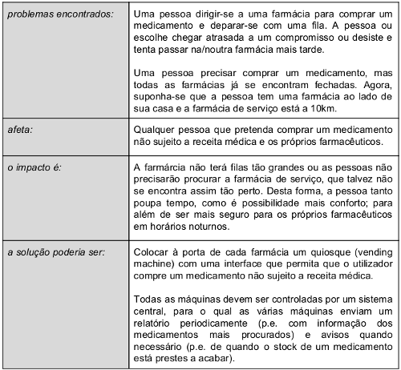
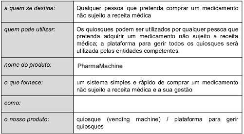
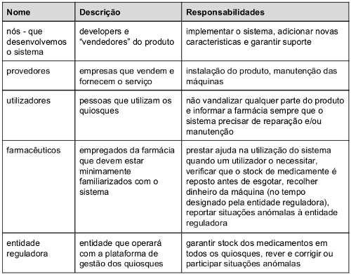

descrição: “O documento de Visão do Projeto apresenta a oportunidade/problema que sustenta o desenvolvimento do projeto e, de forma geral, o âmbito da funcionalidade esperada. O objetivo é caraterizar o objetivo/alcance do projeto (sem descrever detalhes). É um resultado previsto na OpenUP, que fornece um template e recomendações para a sua preparação."
Visão do projeto (v1)
Introdução
De acordo com a Constituição da República Portuguesa aprovada em 1976, qualquer cidadão tem direito à protecção da saúde e o dever de a defender e promover, independentemente da sua condição económica.
Uma das alíneas referente ao direito à saúde (art.º 64) refere precisamente que, para assegurar o direito à protecção da saúde, o Estado está incumbido, em parte, de comercializar e usar produtos químicos, biológicos e farmacêuticos e outros meios de tratamento e diagnóstico.
Um estabelecimento que defende e promove o direito à saúde é a Farmácia, na qual se preparam ou vendem medicamentos e outros materiais necessários para cuidar da saúde.
No entanto, o tempo gasto pelas pessoas para comprarem medicamentos e a forma como se processa a venda pode ser agilizados, recorrendo à tecnologia.
Posicionamento
Declaração do problema

Declaração da posição do produto

Resumo dos stakeholders

Viabilidade do projeto
Consideramos que o projeto e a possibilidade (produto) apresentada têm potencial, pelas razões que consideramos nos desafios/problemas que nos levaram a escolher este tema para trabalhar.
Com o intuito de determinar melhor se o projeto seria viável, decidimos fazer um pequeno estudo de mercado/cliente através de um pequeno questionário que divulgámos nas redes sociais e ainda decidimos fazer algumas entrevistas a farmacêuticos. Os resultados serão publicados na próxima versão.